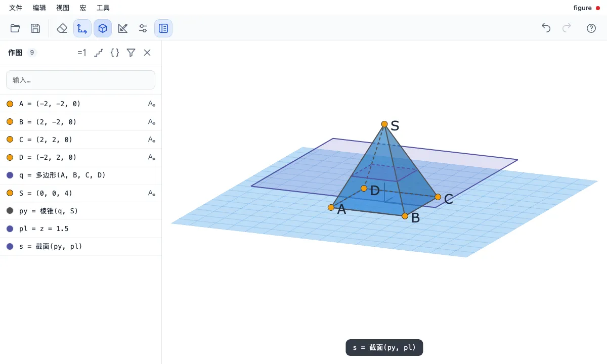

3D

进入 3D
- 新图形是平面图形。 3D 视图使相机倾斜：图形所在平面变为地面z = 0，坐标系变为三面角。再按一次返回平面，并恢复原来的坐标系。
-
只要有对象离开平面 z =
0，就不能返回平面；提示会指出该对象。反之，平面图形不接受任何空间对象（
A = (1, 2, 3)、球…）。 - 每次切换都是一个撤销步骤。
- DGPad 的 3D 图形（其自由点位于屏幕平面内）没有这个按钮。
视图
- 旋转：右键，或单指在空白处拖动。平移：左键在空白处拖动。缩放：滚轮。
- 双指张开可放大图形，合拢可缩小图形。双指一起拖动可平移视图。
- P：透视或平行投影；S：地面。图形选项卡中有相同的设置。
- 被遮挡的部分（棱、圆、地面以下或面后方的直线）用虚线表示。
作图
-
在空白处单击会在地面上创建一个点（工具面板打开时，需使用“点”工具）；用键盘则输入
S = (0, 0, 4)。 - 工具面板中增加平面和立体图形两个工具族以及两种圆；点的工具环中会出现球。
- 对称、旋转、位似和平移也能变换平面、球或多面体（变换对象）。
-
所有需要平面的工具都接受地面：会创建一个隐藏的平面
z = 0，之后重复使用。 -
公式读取全部三个坐标：
d(A, B)是空间中的距离。
| 对象 | 命令 |
|---|---|
| 平面 |
平面(A, B, C)、平面(A, d)、平行平面(A, p)、垂直平面(A, d)、p = x + y + z = 3
|
| 平面的垂线 | 垂线(A, p) |
| 球 |
球(O, A)、球(O, r)
|
| 圆 |
圆(d, P) 以 d 为轴；圆(O, r, d)垂直于直线 d 或平行于平面 d
|
| 立体图形 |
圆柱(A, B, r)、圆锥(A, B, r)、立方体(A, B, C)、棱柱(p, P)、棱锥(p, S)
|
| 截面 |
截面(s, p)：圆、圆锥曲线或多边形
|
| 展开图 |
展开图(c, f)，f 从 0（折叠）到
1（展平）
|
| 交点与交线 |
交点(d, p) 点，交点(p, q)直线，交点(s, t)
两球的交线圆，交点(d, s, n)
直线与球、圆柱或圆锥的交点（n = 1 或 2）
|
| 顶点 | 顶点(c, k)，k 从 1 开始 |
立体图形
- 立体图形是一个整体对象：它画出面和棱（背面的棱为虚线），并遮挡其后的物体。在其轮廓内部即可选中它。
-
两次单击作立方体：同一平面或多边形上的两个点给出
立方体(A, B, p, ±1)，位于朝向相机的一侧；同一高度的两个点给出立方体(A, B, 1)，在上方（−1：在下方）。否则工具会等待第三个点。如果 [AB] 不再与该平面平行，立方体就变为未定义。 - 截面工具以任意顺序接受立体图形和平面。
- 交点工具以任意顺序接受一条直线和一个球、圆柱或圆锥：它创建直线穿过曲面的两个点。在其中一个点附近点击只创建该点。
-
把滑动条作为
展开图的第二个参数可以产生展开动画：f = 滑动条(0, 1, 0)、n = 展开图(c, f)。